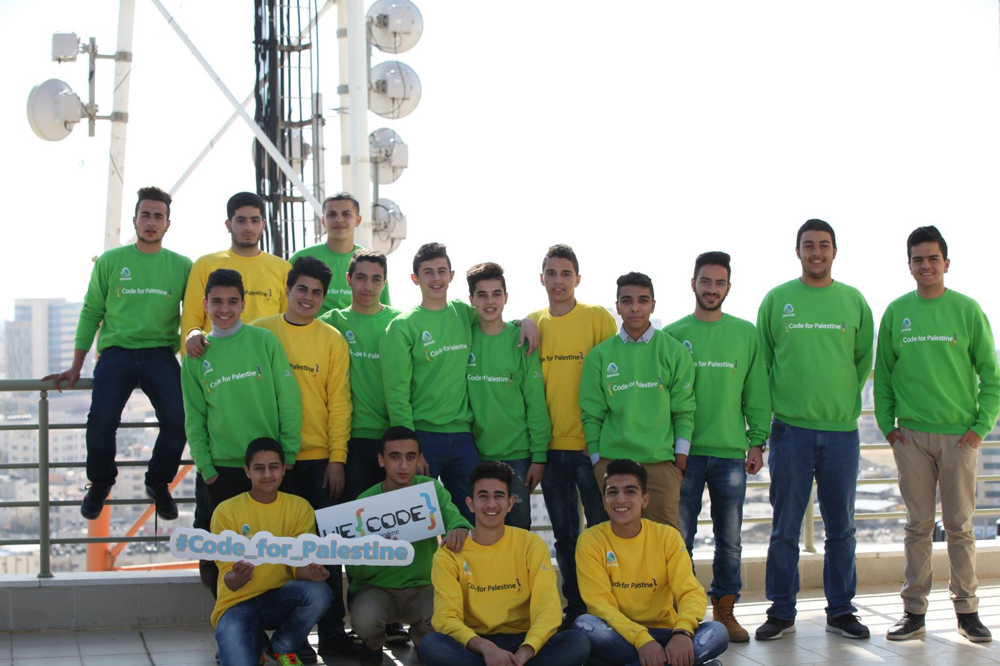
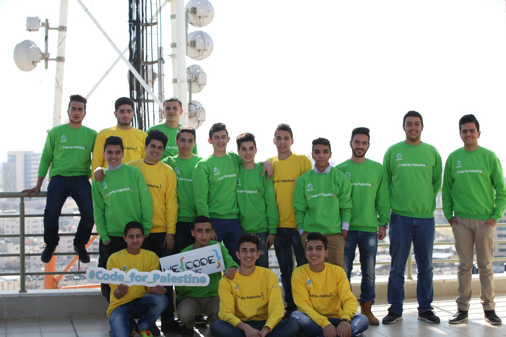
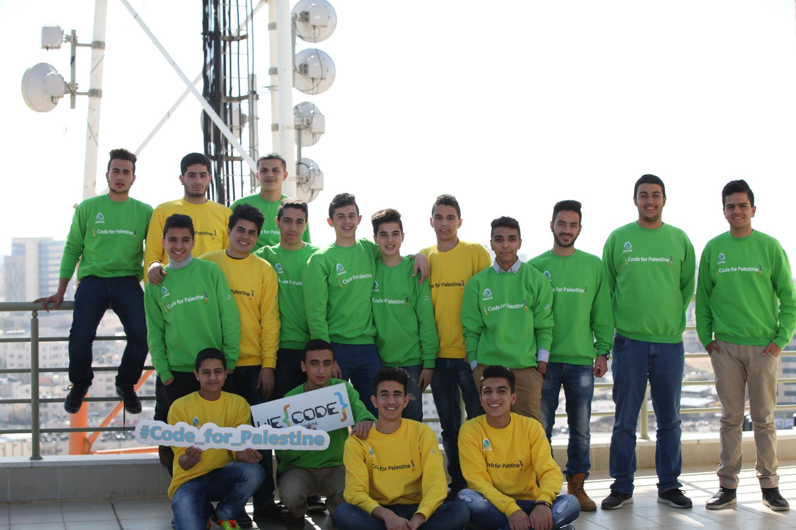
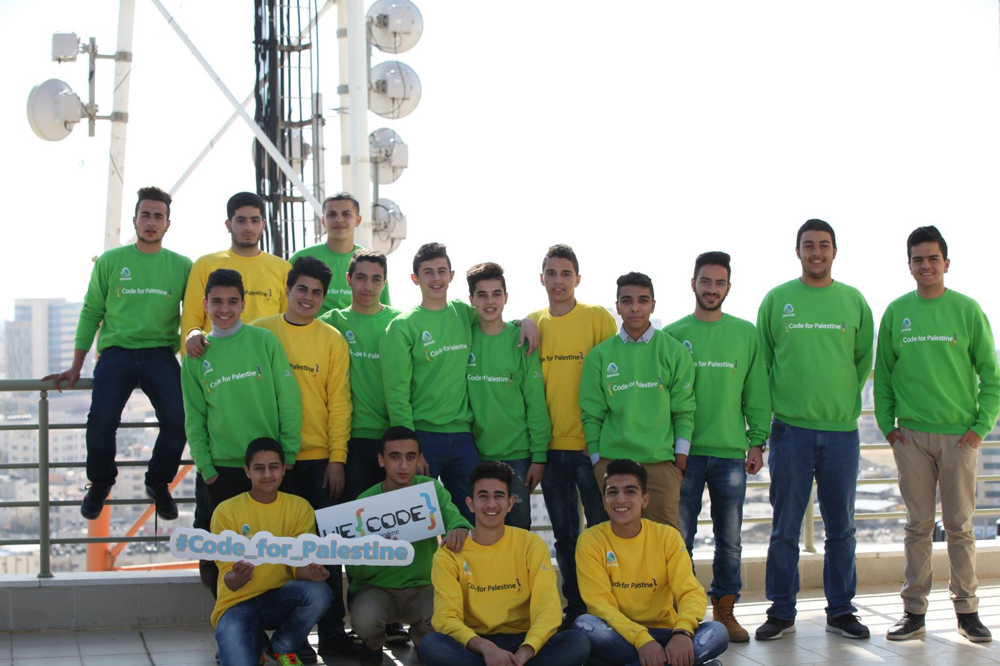

 

My name is Layan Sayeh and I am a 15 year old student in Pioneers Baccalaureate school. I love sports, arts and computers. I am a two year long programmer who worked along with my partner on this project. This website is for we code students to share their thoughts and concerns about the program or any bugs that appear in their code. Its also for people to know about the great program that I was lucky to be accepted to. you can contact me with : Facebook
My name is Salem Mufarreh. I am a 16 year old student who studies at the Greek Catholic School in Ramallah. I love programming and I am a workaholic. I made this website with my partner in four days to create a way for We code students to communicate and share their experiences. to contact me with: Facebook